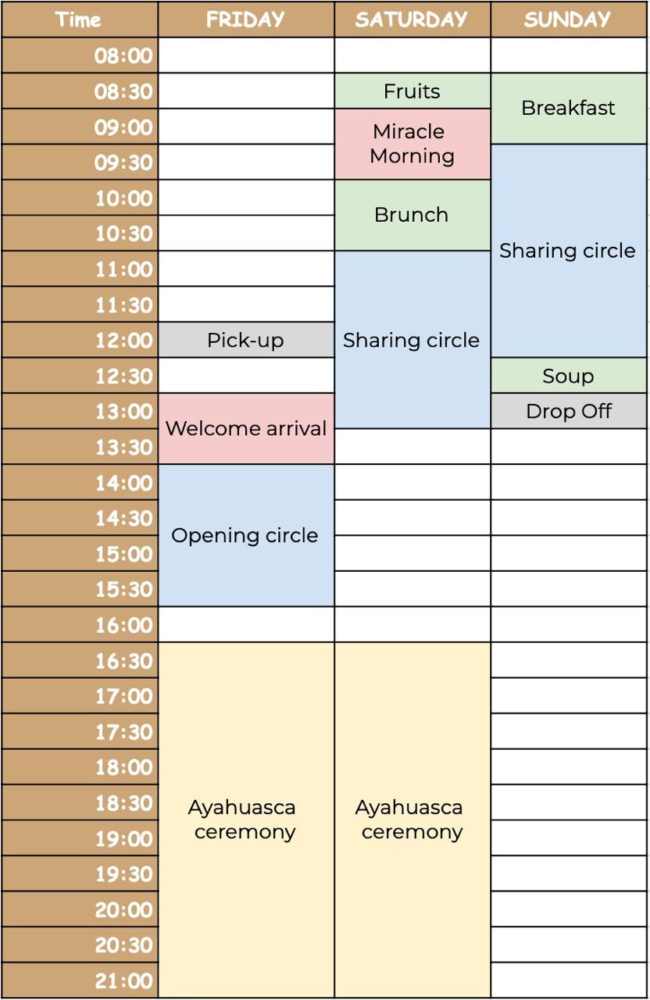

Scheduling:
When are the retreats?
Scrape the website
Are you available on other dates too?
We host between 2 - 3 retreats a month. If those dates do not fit your schedule, it is also possible to book private ceremonies or retreats that fit your schedule.
Comment (Check the private ceremony section)
Scheduling a call and timing
Comment:
- Self explanatory
- either sending a booking link
- Figure out when they are free
Is it possible to join the retreat later:
- It is recommended ot be there for the whole retreat experience and be there from the beginning. However, in certain situations it is possible to make an exception. To see if that is possible on the retreat that you intend to join, it’s best to schedule a call. Depending on how much later you join the price can be adjusted (but has to be looked at in the call)
Is it possible to leave earlier from the retreat?
- It is recommended to stay for the whole retreat dynamic. However, in some cases it is possible to finish the retreat sooner. To see if that is possible on the retreat that you intend to join, it’s best to schedule a call. Depending on how much earlier you leave the price can be adjusted (but has to be looked at in the call)
What time doest the retreat end?
End time retreat “Rest & Realign”
We finish the retreat at 1 pm on the last day. After that it takes about 1 hour to arrive at the drop - off location Socialtel
End time retreat “Discover & Connect”
We finish the retreat at 1 pm on the last day. After that it takes about 1 hour to arrive at the drop - off location Socialtel
End time retreat “Profoundly Shift”
We finish the retreat at 12:30 pm on the last day. After that it takes about 1 hour to arrive at the drop - off location Socialtel
What is the Itinerary of the retreat?
Itinerary “Rest and Realign”

Itinerary “Discover & Connect”
Itinerary “Profoudly Shift”

Pricing:
What’s the price of the retreat and what is included?
(Similar variation of the question:)
- What is included in the price?
- What kind of retreats do you have?
Pricing “Reset & Realign”
Package 1: “Reset & Realign” (Friday - Sunday, 3 day retreat, 2 ceremonies) Price: 495 USD
- 2 Ayahuasca Ceremonies
- 2 nights stay in a room with 2–4 people (private rooms available for $70 USD extra a night
- Organic breakfast, lunch and dinner throughout your stay)
- 3 sharing circles to help understand your experience
- Individual energetic cleaning
- Intimate group size, up to 12 participants
Pricing “discover & connect”
Package 2: “Discover & Connect” (Thursday - Sunday, 4 day retreat, 2 ceremonies) Price: 595 USD
- 2 Ayahuasca Ceremonies
- 3 nights stay in a room with 2–4 people (private rooms available for $70 USD extra per night)
- Organic breakfast, lunch, and dinner throughout your stay
- 1 Holotropic breathwork session to connect with your subconscious and emotionally release
- Ice baths to connect with your body’s intelligence and quiet the mind
- Sharing circles to help understand your experience
- Individual energetic cleaning
- Optional purgatives with Kambo or Azuwactoto
- Intimate group size, max 12 participants
Pricing “profoundly shift”
Package 3 “Profoundly shift” (Saturday - Friday, 1-week retreat (7-day) , 4 ceremonies) Price:1195 USD
- 4 Ayahuasca Ceremonies
- 6 nights stay in a room with 2–4 people (private rooms available for $60 USD extra a night)
- Cacao ceremony
- 1 Holotropic breathwork session to connect with your subconscious and emotionally release
- 2 miracle mornings
- Individual energetic cleaning
- 1 art therapy
- Ice baths to connect with your body’s intelligence and quiet the mind
- Sharing circles to help understand your experience
- Organic breakfast, lunch and dinner throughout your stay
- Intimate group size, max 12 participants
Comment: The best is to send a picture of the different packages (ideally also the upcoming dates of each of this retreat)
Is the medicine included in the retreat price?
Yes, the price of the retreat includes the Ayahuasca medicine.
On some platforms, we’re required to mention this separately for legal reasons, but there are no additional costs for the ceremonies themselves.
Optional extras—like massages, private rooms, or private airport pick-up—can be added for an additional fee.
Transport
Airport pick - up / Drop - off:
- Distance to the airport 1:20 h (also depending of the traffic)
- If you are coming in through an international flight and your first destination in Colombia Medellin, expect to wait in line at migration. Usually between 1 - 3 hours
- Price of airport pick - up / drop - off: 50 USD, every additional hour the driver needs to wait is 5 USD extra
Pick - up / Arrival time / airport pick - up /
It depends what retreat people are joining:
General information:
- Group Pick - up from the the common space (Socialtel) is included in the retreat price
- Other pick - up spots from the city are not included in the price but can be organized (price around 30 USD, depending on where you are in the city)
Retreat specific Pick - up times:
Pick - up “Rest & Realign”
- Pick - up is at 12 pm (midday) at Socialtel Medellín in Poblado
Google Maps link - If you come through other means, it is important to be at the retreat center by 2 pm. (We start the ceremony at 4:30 pm)
Pick - up “Discover & Connect”
- Pick - up is at 3:30 pm at Socialtel Medellín in Poblado
Google Maps link - Official start of the retreat is at 4:30
- If you arrive after 6:30 you will miss the opening sharing circle. It is still ok to join later, you will get all the relevant information but you will miss part of the group dynamics.
Pick - up “Profoundly shift”
- Pick - up is at 3:00 pm at Socialtel Medellín in Poblado
Google Maps link - Official start of the retreat is at 4:00
- It is recommended to be at the retreat latest by 7:30 pm to be able to join the welcome circle.
Where is the retreat located?
Our retreat center is located in the mountains, just one hour north of Medellín.
View location on Google Maps
Drop - off
Drop - off General information:
- Group Drop - off to the common space the the Socialtel is included in the retreat price
- Other drop - off spots from the city are possible as well. An extra 3 - 10 USD is paid directly to the driver if you want him to drive you to your hotel / airbnb / apartment
Drop - off Airport
- We can organize transport (drop - off) to the airport. The price if 50 USD and the airport 1:20 h away from our location.
Additional information early flight after a ceremony.
- We can organie that. However, we don’t recommend leaving earlier than 6:00 AM. Our ceremonies typically end around midnight to 1 AM, so departing too early may not give you enough time to have the experience of the ceremony settle in.
That said, we understand flight logistics and will support you as best we can.
Can I arrive earlier to the retreat?
As we are not a functioning hotel, but a retreat center we usually do not receive guests before the retreat. In certain cases it is possible to arrange it, but it is an exception (depending on arrival time etc.).
Can I stay longer at the retreat?
As we are not a functioning hotel, but a retreat center we usually do not host guests outside of the retreat activities. In certain cases it is possible to arrange it, but it is an exception (depending on arrival time etc.).
Lodging + Food :
What kind of private accomodation is available and what is the price?
What food options are available?
We cater to a variety of dietary needs:
- Standard / “normal” diet
- Vegetarian
- Vegan
- Pescatarian
Upon request, we can also accommodate Gluten-free, Halal or Kosher meals. If you have a specific dietary requirement, just let us know—we’ll do our best to support it.
How does the shared accomodation look like?
We have three different rooms for private accomodation,
Room 1: 2 queen size beds,
Room 2: 1 queen size bed, 1 bunk bed
Room 3: 2 single + 1 bund bed
The dynamic of the retreat determines the amount of people in the shared accomodations. There will be 2 - 4 people in one room. This is affacted by various factors,
- the amount of people in the retreat
- the amount of private accomodation booked
- the number of men / women participants (we separate the rooms by gender).
Because of that it is not possible to book a specific shared room. However, we try to accomodate the best way possible (for example putting a couple in one room if possible)
Comment: (I’ll add pictures later)
Do you have wifi?
Yes, we have wifi at the facility
Others:
Private ceremony
Yes, we do. A private ceremony costs 750 USD, which includes:
- The shaman and full ceremonial team (musician, English translation)
- Ayahuasca medicine
- Ceremony space
- Sleeping arrangement
- Breakfast the next morning
Transport is not included, but we can help arrange it. It's approx. 20 USD one way from Medellín.
This price covers up to 2 people. Each additional guest is 50 USD.
We’re happy to hold space privately if that’s what calls you most. That said, we’ve found the group retreat experience can be incredibly powerful as well.
Sometimes people are hesitant—wondering, “What if I don’t like someone in the group?” or “What if I’m judged?”
But those very dynamics often offer rich learning opportunities that can’t emerge in private settings.
Still, it’s entirely your choice—we’re here to support whatever path feels right for you.
You’re welcome to share more about what’s calling you toward this work.
Is this your first time sitting with Ayahuasca?
Additinal note:
If you want to schedule various private ceremonies that is also possible. There we will need to check, how much longer you want to stay at the facility, what other activities you would like to book (massage, holotropic breathwork, Ice bath, Yoga, Sound healing etc.) It is especially recommended to book additional sharing circles. The deeper you go with the medicine, the more important it is to also receive a guidance outside of the ceremony.
Let us know what fits your needs best and we can accomodate to that.
Concerns
Is it safe to travel to Medellín, Colombia?
Yes. Medellín is a vibrant and welcoming city that receives over 1 million tourists each year.
As with any destination, safety depends on how and where you move—staying aware, avoiding risky areas at night, and being mindful about intoxication helps to ensure a smooth experience.
Our retreat takes place in a safe, secluded area in the mountains, far from the hecticness and distractions of the city.
Fear of losing control:
It is a very common concern, we like to know what is going on and the idea of losing control can be terrifying.
It can happen, however the experience is a lot less common than people think. There are different ways to help bring down the effects of the Ayahuasca. Our team has managed this type of situation many times and we are sure we can support you as well, if it end up happening to you.
As it is a detailled topic, the best is to have a personal call about it how that support would look like.
Additionally, we created a YouTube video you can also watch around the topic: https://youtu.be/AFoO7nwCDVc?si=rmB2ul7LVgwZ3u6D
Fear of vomiting
Ayahuasca and vomiting are very closely linked and in many people it creates a resistance to the experience, sometimes even a strong fear. So you are not alone in this.
On the Ayahuasca the vomiting feels in most cases as a relief since it is not just a physical reaction, but also an energetic cleanse.
As it is a detailled topic, the best is to have a personal call about how we can help you best around that situation
https://youtu.be/vNPdiAoRA74?si=sqqhjNLR_XxxmafN
Additionally, we created a YouTube video you can also watch around the topic:
General ways of addressing the concerns of the people
When people express a concern we:
- Validate the concern (it is normal to feel that way, many people struggle with this)
- Check the Data base if we cover that topic
- Give a quick answer
- Send them a link to the article / YouTube video we published
- Suggest a call
Question around the Ayahuasca
Who facilitates the ceremonies and shares the medicine?
- Our medicine lineage comes from the Kamsá Biyá tradition—specifically from the family of Mama Concha, who represents 10 generations of uninterrupted wisdom. This lineage originates from Sibundoy, Putumayo, a sacred region where the Andes and the Amazon meet.
- Ceremonies are led by Sergio Henao, Vanessa (his wife), or both. With over 18 years of training alongside Mama Concha’s family, Sergio and Vanessa carry the depth, humility, and care that this ancestral path requires. Each ceremony is held with deep respect and intentionality.
How do I prepare for Ayahuasca?
Ask 10 different traditions and you’ll get 10 different answers. In Colombia, the approach is generally more down-to-earth and practical.
Here’s what we recommend:
- Avoid red meat, coffee, and lactose for 5–7 days before your ceremony
- Spend some quiet time in nature, get off your phone, and reflect on your intention
- Refrain from intercourse for 2 days before (ideally 7).
- Don’t use drugs, alcohol, or intoxicating substances for at least 7 days before the retreat
These guidelines aren’t about perfection—they’re about supporting your system and helping you arrive more open and clear.
We created a video to share our guidelines for the preparation of Ayahuasca:
https://youtu.be/Q0Jcx9C8dGY?si=OGZ0C13EKyJEF10i